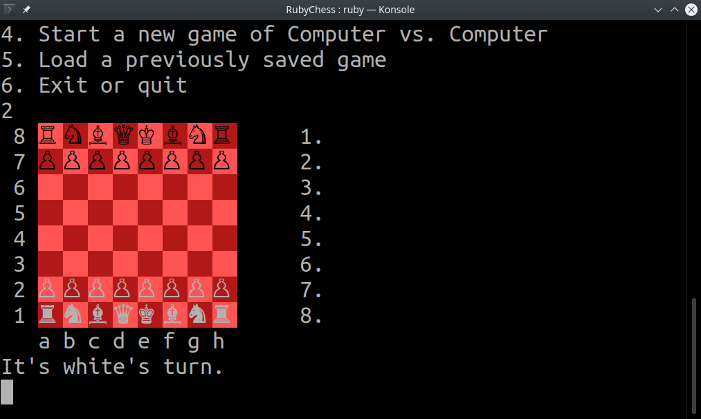
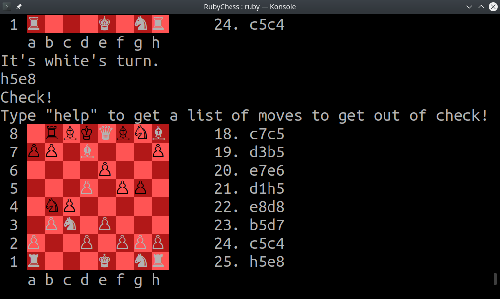
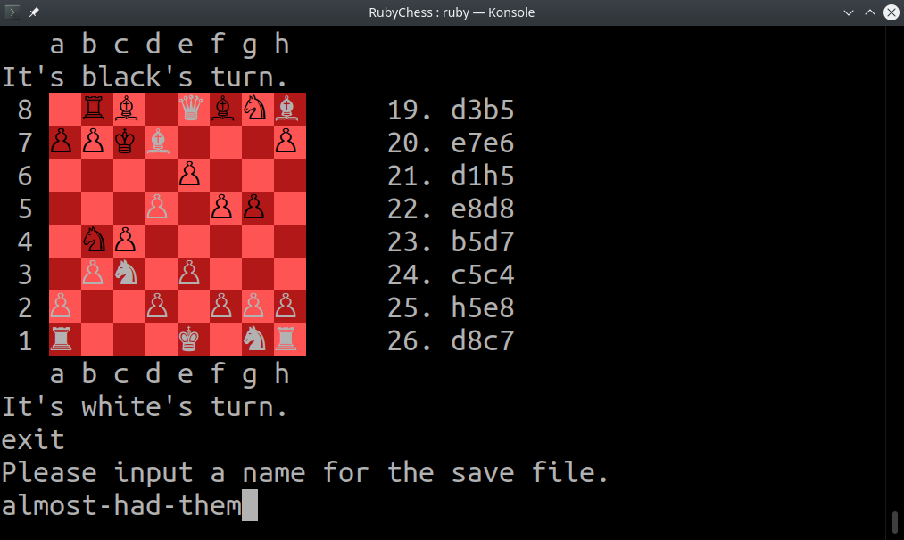
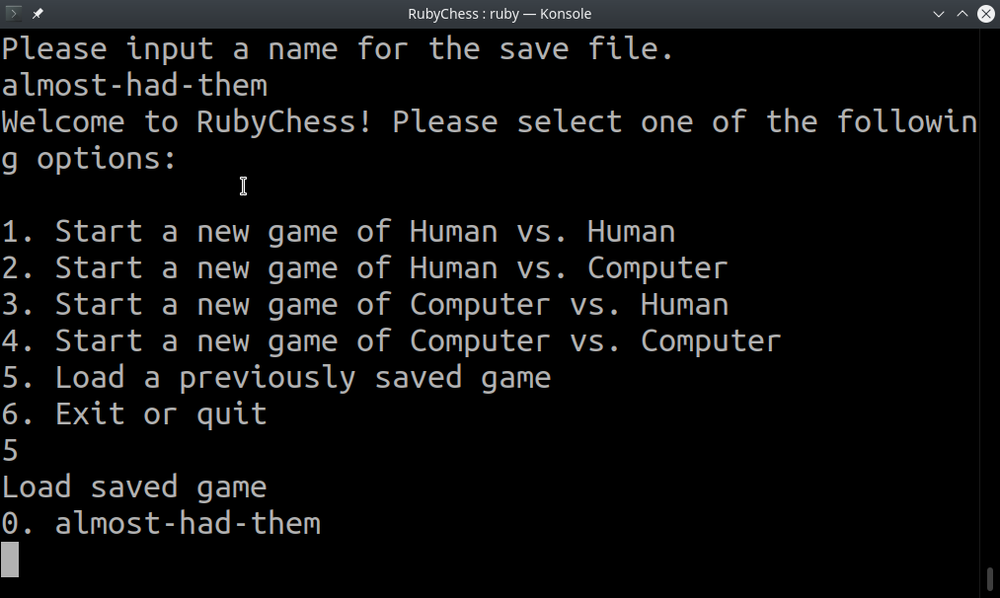

Ruby Chess by Lukas Erekson
Welcome to my page about my Odin Project Ruby Basics capstone project, RubyChess. RubyChess is a terminal implementation of the game of Chess written in Ruby. All code, including over 100 test cases, is an original creation of me, Lukas Erekson.
This capstone project reflects all that I have learned as part of The Odin Project's course as well as some additional material and gems that I wanted to use, including generating documentation with RDoc and testing code coverage with SimpleCov.
Installing and Playing
Ruby 2.7+ is required. The gem colorize also needs to be installed in order for the board and chess pieces to render correctly unless you use the RPLIT.io branch, where the needed elements are implemented locally.
To install and play, simply clone the main branch in your temrinal with
git clone https://github.com/LukasErekson/RubyChess.git
Then, run ruby lib/main.rb in the downloaded RubyChess directory. A game menu will appear giving you options to start the game, load a saved game, or quit.
Playing the Game
Upon starting a new game, you will be given a standard board configuration. White always goes first.
Moving
To make a move, type the positon of the piece you want to move and then the space to which you want to move it. For example, if you want to move the piece at f1 to c4, you can type either of the following:
f1c4f1 to c4
Check!
Check is automatically calculated, and typing "help" will provide the list of moves to get out of check. If there are no available, the game ends with a checkmate.
Saving for Later
You can save the current game state at any time by typing "exit" or "save". You will be prompted to name the save file. You can later reload that file in the main menu.
 